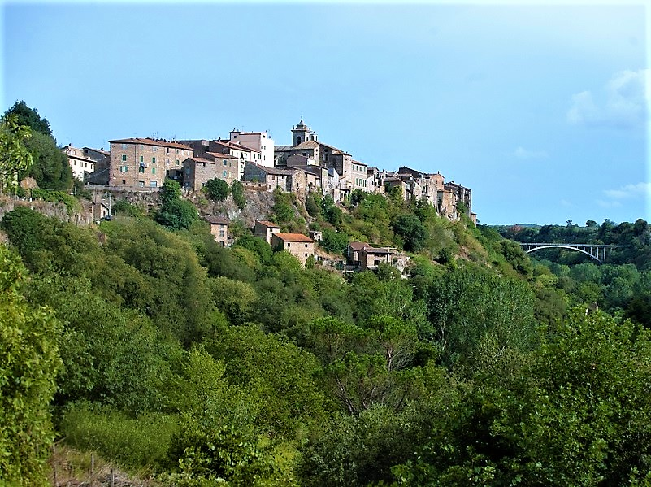
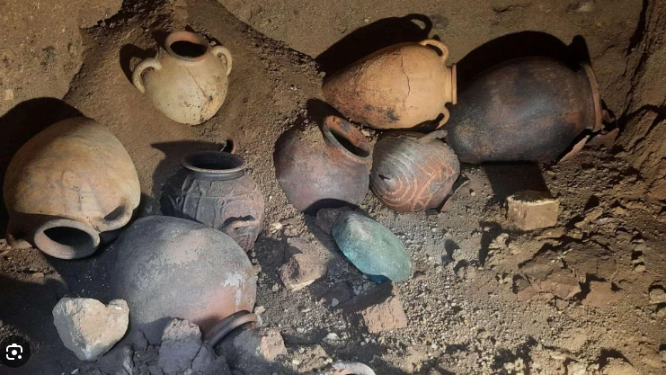
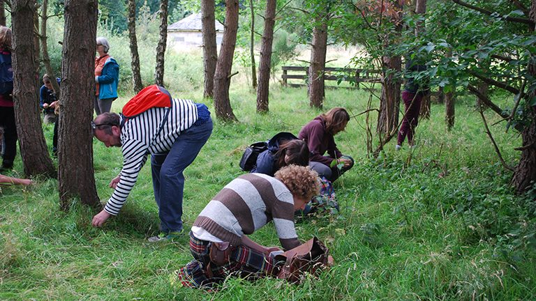
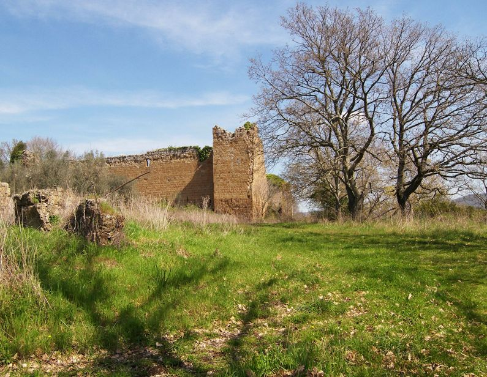
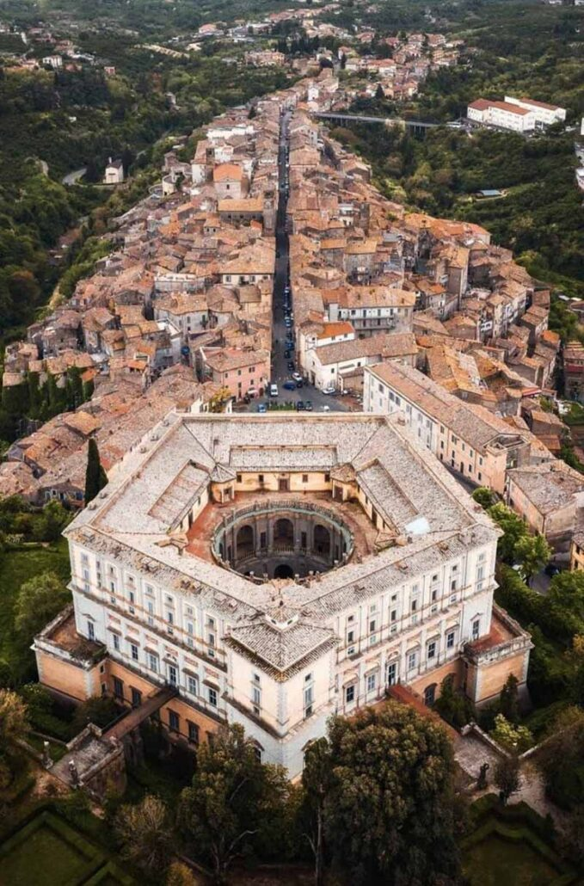
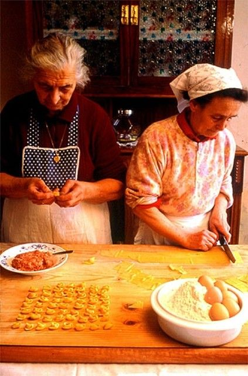
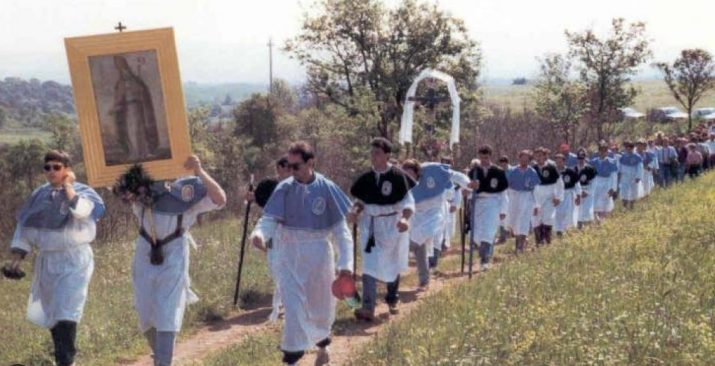
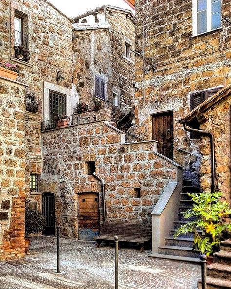

Everything that happens over Easter week, morning to evening: wild asparagus foraging, Etruscan tombs and Tarquinia, a donkey hike to San Giovenale with panonto, Caprarola and Lago di Vico, cheesemaking, the thermal baths, and Easter in the village.








Seven nights in a traditional stone house in Blera's historic center, no chain hotels, a real place run by real people.
Breakfast, lunch, and dinner every day of the trip, cooked by local families, at farms, in a cantina, or by the lake.
Wild asparagus foraging, Etruscan tombs and Tarquinia, San Giovenale with the donkeys, Caprarola, Lago di Vico, cheesemaking, the thermal baths, the Easter party and the La Chimera screening. All of it.
Airport pickup, all transfers between sites and villages, and drop-off at departure.
Not included: flights, travel insurance, personal purchases
Booking opens once our Easter-week hosts are confirmed. Join the waitlist and you'll hear first, with first pick of the 8 spots.
No. The Italian Spring Experience is one flat price, €2,250 per person, whenever you book. See the full pricing chart.
Cancel 30+ days before departure for a full refund, 15–29 days for 50%, and it's non-refundable within 14 days, since accommodation and local partners are booked and paid on your behalf in advance. Unavoidable circumstances at or near Blera, or a cancellation by us, get a full refund regardless of timing. See the full policy.
Yes. Alongside this fixed departure, Rasna offers fully custom small-group Italy experiences. Pick your own activities and dates and Rasna arranges everything around you. See Make Your Own.
Capped at 8 guests. One departure, March 23–30, 2027.
Join the waitlist →